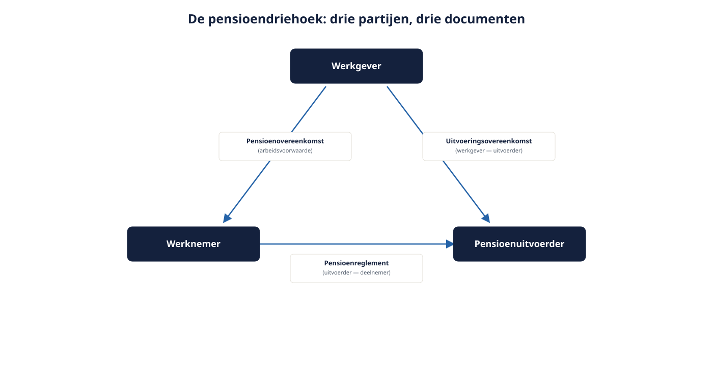

Deel 2 — De pensioendriehoek
Niveau 1 · Fundament · Deelnemersreader
2.1 Leerdoelen
Na dit deel kun je:
- de drie rechtsverhoudingen in de pensioendriehoek benoemen en aangeven welk document elke verhouding vastlegt;
- uitleggen wat de onderbrengplicht inhoudt en wat de gevolgen zijn als een werkgever daar niet aan voldoet;
- de verplichte onderdelen van een uitvoeringsovereenkomst benoemen en het verschil zien met een uitvoeringsreglement;
- verklaren waarom een wijziging van de pensioenregeling arbeidsrechtelijk begint en niet bij de uitvoerder;
- de rol van de ondernemingsraad en van het instemmingsrecht plaatsen;
- aanwijzen waar in de driehoek een transitiebesluit vastloopt als een van de drie lagen niet is bijgewerkt.
2.2 Waarom de driehoek het belangrijkste model van deze cursus is
Vrijwel elk pensioenconflict, elke vertraagde transitie en elke verkeerd uitgevoerde regeling is terug te voeren op één oorzaak: de drie lagen liepen uit de pas. De werkgever spreekt iets af met zijn medewerkers dat de uitvoerder niet kan administreren. De uitvoerder past het reglement aan zonder dat de arbeidsvoorwaarde is gewijzigd. Of de arbeidsvoorwaarde wijzigt, maar het contract met de uitvoerder loopt nog twee jaar door in de oude vorm.
Wie de driehoek beheerst, stelt bij elk voorstel automatisch de vraag: welke van de drie lagen raakt dit, en welke twee moeten meebewegen? Dat is de kernvaardigheid van dit deel.

2.3 De drie verhoudingen
Verhouding 1: werkgever — werknemer. De pensioenovereenkomst.
Dit is een arbeidsvoorwaarde. De pensioenovereenkomst is wat de werkgever aan de werknemer heeft toegezegd. Zij kan voortkomen uit een cao, uit een individuele arbeidsovereenkomst, uit een personeelsreglement of uit een verplichtstelling. Vorm is niet beslissend: waar het om gaat is wat is toegezegd.
De Pensioenwet onderscheidt drie karakters van pensioenovereenkomst — uitkeringsovereenkomst, kapitaalovereenkomst en premieovereenkomst. Onder de Wtp resteert in beginsel alleen de premieovereenkomst, aangevuld met de premie-uitkeringsovereenkomst die alleen door verzekeraars mag worden aangeboden. Deel 3 werkt dit uit.
Verhouding 2: werkgever — uitvoerder. De uitvoeringsovereenkomst.
De werkgever is verplicht zijn pensioentoezegging onder te brengen bij een pensioenuitvoerder. Dat is de onderbrengplicht. Het contract waarmee dat gebeurt heet bij een verzekeraar, PPI of APF-kring een uitvoeringsovereenkomst; bij een verplichtgesteld bedrijfstakpensioenfonds bestaat die contractuele relatie niet — daar geldt eenzijdig een uitvoeringsreglement dat het fonds vaststelt.
Dat verschil is groter dan het lijkt. Een werkgever die bij een bpf is aangesloten, onderhandelt niet over de voorwaarden: hij valt onder de werkingssfeer en daarmee onder het reglement. Een werkgever met een verzekerde regeling onderhandelt wél — over premie, over de looptijd, over de dekkingen, over de indexatietoezegging. Die onderhandelingsruimte is precies de reden dat de Wtp-transitie in de verzekerde wereld werkgever voor werkgever verloopt en in de fondsenwereld sector voor sector.
Verhouding 3: uitvoerder — deelnemer. Het pensioenreglement.
Het pensioenreglement beschrijft de rechten en plichten van de deelnemer tegenover de uitvoerder: wanneer ontstaat deelname, hoe wordt opgebouwd, welke keuzes zijn er, wat gebeurt er bij overlijden, arbeidsongeschiktheid of uitdiensttreding. De deelnemer ontleent zijn aanspraken uiteindelijk hieraan. De uitvoerder mag het reglement niet vullen met iets anders dan wat de werkgever heeft toegezegd en in de uitvoeringsovereenkomst is vastgelegd.
2.4 De richting van de driehoek
De drie lagen kennen een vaste volgorde. Een wijziging begint altijd bovenaan:
- Arbeidsvoorwaardelijk. Werkgever en werknemers (of sociale partners) wijzigen de toezegging. Nodig: draagvlak, en afhankelijk van de situatie instemming van de OR, van de vakbonden of van individuele werknemers.
- Contractueel. De werkgever legt de gewijzigde toezegging vast bij de uitvoerder, in een nieuwe of gewijzigde uitvoeringsovereenkomst.
- Reglementair. De uitvoerder verwerkt het in het pensioenreglement en in zijn administratie, en informeert de deelnemers.
Wie deze volgorde omdraait, krijgt problemen. Een uitvoerder die alvast een nieuw reglement vaststelt “omdat de wet nu eenmaal verandert”, legt de deelnemer iets op wat arbeidsvoorwaardelijk niet is overeengekomen. Omgekeerd: een werkgever die met zijn OR een prachtige nieuwe regeling afspreekt die zijn uitvoerder niet kan administreren, heeft een toezegging gedaan die hij niet kan waarmaken — en de toezegging blijft dan zijn probleem.
In de transitie naar de Wtp is dit de meest voorkomende bron van vertraging: het arbeidsvoorwaardelijke traject duurt langer dan gepland, terwijl de uitvoerder een implementatieslot heeft dat maanden van tevoren wordt gereserveerd. Deel 15 werkt dit uit tot een stappenplan.
2.5 De onderbrengplicht
De werkgever die een pensioentoezegging doet, moet die onderbrengen bij een pensioenuitvoerder. Pensioen in eigen beheer is voor werknemers niet toegestaan; voor de directeur-grootaandeelhouder gold een uitzondering die is uitgefaseerd (deel 26).
Gevolgen als de onderbrengplicht niet wordt nagekomen:
- de toezegging blijft bestaan — er is een arbeidsvoorwaarde, alleen geen kapitaal;
- de werkgever draagt het volledige risico zelf, zonder verzekering, zonder belegd vermogen;
- de werknemer kan nakoming vorderen, en dat gebeurt in de praktijk vaak pas op pensioendatum, jaren na dato;
- de fiscale behandeling loopt spaak, met naheffing als reëel risico.
Een klassieke variant die je in adviespraktijk tegenkomt: de werkgever die zijn contract met de verzekeraar laat verlopen zonder te verlengen, in de veronderstelling dat “de regeling dan stopt”. De regeling stopt niet — alleen de dekking stopt. Bij verzekerde regelingen met een contract voor bepaalde tijd is dit een reëel risico rond de transitie, omdat contracten en transitiemomenten niet vanzelf samenvallen.
2.6 Wat staat er in een uitvoeringsovereenkomst?
De Pensioenwet schrijft een aantal onderwerpen voor. Herken ze in elk contract dat je onder ogen krijgt:
- de wijze van vaststelling van de premie en de betalingstermijnen;
- de informatieverplichtingen over en weer: welke gegevens levert de werkgever, en wanneer;
- de procedure bij premieachterstand, inclusief de melding aan de deelnemers;
- de voorwaarden voor toeslagverlening (indexatie) en de financiering daarvan;
- de wijze van uitvoering en de gevolgen van beëindiging van het contract;
- bij een verzekerde regeling: de looptijd, de verlengingsvoorwaarden en wat er gebeurt met de opgebouwde aanspraken na afloop.
Dat laatste punt is bij de transitie cruciaal. Bij een verzekerde regeling blijven de aanspraken die onder het oude contract zijn opgebouwd in beginsel gewoon staan bij de verzekeraar, premievrij, onder de oude voorwaarden. Zij gaan niet automatisch mee naar de nieuwe regeling. Dat is een fundamenteel verschil met invaren bij een fonds, waar juist wél het uitgangspunt is dat de bestaande aanspraken worden omgezet. Deel 16 behandelt dit volledig; onthoud nu alleen dat het contract bepaalt wat er met de oude potjes gebeurt.
2.7 De rol van de ondernemingsraad
Bij een regeling die niet door een verplichtgesteld bedrijfstakpensioenfonds wordt uitgevoerd, heeft de ondernemingsraad instemmingsrecht op het vaststellen, wijzigen of intrekken van een regeling op grond van een pensioenovereenkomst. Praktisch betekent dat: bij Van Doorn Techniek kan Ferdi van Doorn zijn regeling niet Wtp-conform maken zonder Ilse Groenewold en haar OR.
Enkele aandachtspunten die in de praktijk misgaan:
- Instemming is niet hetzelfde als informeren. Een presentatie over “wat er gaat veranderen” is geen instemmingstraject.
- Instemming van de OR bindt niet automatisch de individuele werknemer. Bij een verslechtering van een individueel overeengekomen arbeidsvoorwaarde kan aanvullende individuele instemming nodig zijn, of moet worden teruggevallen op een eenzijdig wijzigingsbeding met een zwaarwichtig belang. Deel 22 werkt de juridische lijn uit.
- Timing. Een OR die pas wordt betrokken als het contract met de uitvoerder al is getekend, heeft materieel geen keuze meer — en dat is een grond waarop de instemming aanvechtbaar wordt.
In de fondsenwereld ligt het anders: daar zitten de sociale partners aan tafel en verloopt de wijziging via de cao en het transitieplan. De OR heeft dan geen instemmingsrecht op de regeling zelf.
2.8 Documenten die eromheen hangen
Naast de drie kerndocumenten kom je tegen:
| Document | Van wie | Waarvoor |
|---|---|---|
| Startbrief / eerste informatie bij indiensttreding | uitvoerder | deelnemer informeren bij start deelname |
| Pensioen 1-2-3 | uitvoerder | gelaagde uitleg van de regeling |
| UPO | uitvoerder | jaarlijks overzicht van de eigen aanspraken |
| ABTN | fonds | actuariële en bedrijfstechnische nota, het beleidskader |
| Transitieplan | sociale partners / werkgever | verantwoording van de keuzes bij de overgang |
| Implementatieplan | uitvoerder | hoe de uitvoerder de overgang realiseert |
| Communicatieplan | uitvoerder / werkgever | hoe deelnemers worden meegenomen |
De laatste drie zijn transitiedocumenten en komen inhoudelijk terug in deel 7 (transitieplan) en 15 (implementatie). Hun bestaan hoort echter hier thuis, want zij zijn niets anders dan de drie lagen van de driehoek in transitievorm: het transitieplan hoort bij de arbeidsvoorwaardelijke laag, het implementatieplan bij de uitvoeringslaag, en de communicatie raakt de reglementaire relatie met de deelnemer.
2.9 De driehoek in de casus
Van Doorn Techniek. Pensioenovereenkomst: opgenomen in het personeelshandboek, laatst gewijzigd in 2016, met een verwijzing naar de staffel. Uitvoeringsovereenkomst met Meridiaan Pensioen: looptijd tot en met 31 december 2026, met stilzwijgende verlenging van één jaar bij niet-opzeggen. Pensioenreglement: van Meridiaan, editie 2016 met twee wijzigingsbladen.
Constateer wat hier speelt: het contract loopt af op het moment dat de transitie moet plaatsvinden. Dat is geen toeval maar een kans — het natuurlijke moment om de regeling om te bouwen. Tegelijk is het een risico: als het arbeidsvoorwaardelijke traject niet op tijd rond is, verlengt het contract stilzwijgend in de oude vorm, terwijl 1 januari 2028 nadert.
Bpf T&I. Geen uitvoeringsovereenkomst maar een uitvoeringsreglement. De regeling volgt uit de cao en de verplichtstelling. Van Doorn Techniek zit hier niet in, op grond van een vrijstelling — deel 4.
Delta Chemie. Ondernemingspensioenfonds met een uitvoeringsovereenkomst tussen fonds en werkgever, inclusief afspraken over premie en over bijstorting. Dat maakt de positie van de werkgever hier anders dan bij een bpf: er ís een contractuele relatie, en die bevat verplichtingen die bij een eventuele liquidatie of overdracht moeten worden afgewikkeld.
2.10 Diagnosevragen bij een dossier
Gebruik deze vijf vragen als je een onbekend pensioendossier krijgt voorgelegd:
- Waar staat de toezegging, en van wanneer dateert die tekst?
- Bij wie is zij ondergebracht, en tot wanneer loopt dat contract of die aansluiting?
- Welk reglement geldt op dit moment voor welke groepen deelnemers?
- Wijken de drie lagen op enig punt van elkaar af?
- Wie moet instemmen als er iets verandert?
Vraag 4 levert de meeste vondsten op. Vraag 3 levert de meeste verrassingen op, omdat er in de praktijk vaak meerdere groepen met verschillende reglementen naast elkaar bestaan — en dat aantal groepen neemt door het overgangsrecht juist toe. Deel 6 laat zien hoe een enkele werkgever door de transitie met twee, soms drie regelingen tegelijk komt te zitten.
2.11 Samenvatting
- De driehoek bestaat uit drie verhoudingen met drie documenten: pensioenovereenkomst (werkgever–werknemer), uitvoeringsovereenkomst of uitvoeringsreglement (werkgever–uitvoerder), pensioenreglement (uitvoerder–deelnemer).
- Wijzigingen beginnen arbeidsvoorwaardelijk, gaan dan naar het contract en pas daarna naar het reglement.
- De onderbrengplicht is hard: een niet-ondergebrachte toezegging blijft een verplichting van de werkgever.
- Bij een verplichtgesteld bpf is er geen onderhandelbare uitvoeringsovereenkomst maar een eenzijdig uitvoeringsreglement.
- De OR heeft instemmingsrecht buiten het verplichtgestelde bpf om; timing bepaalt of dat recht materieel iets voorstelt.
- Bij verzekerde regelingen bepaalt het contract wat er met oude aanspraken gebeurt; zij gaan niet vanzelf mee.
Doorkijk naar deel 3. Nu de structuur staat, kijken we naar de inhoud van de toezegging: welke soorten pensioenovereenkomsten kent de wet, wat verandert daar onder de Wtp, en wat is het verschil tussen de solidaire premieregeling, de flexibele premieregeling en de premie-uitkeringsovereenkomst?